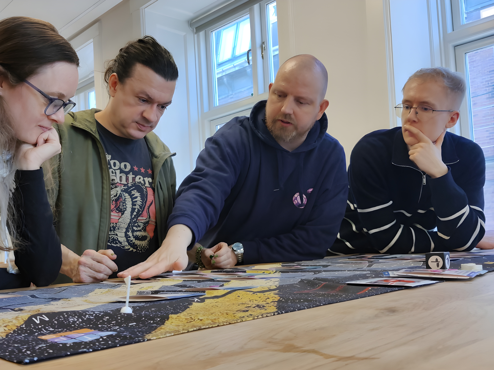
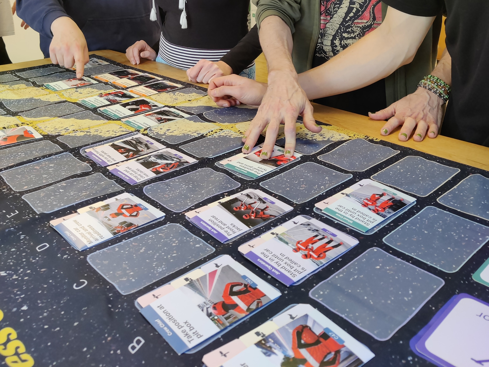
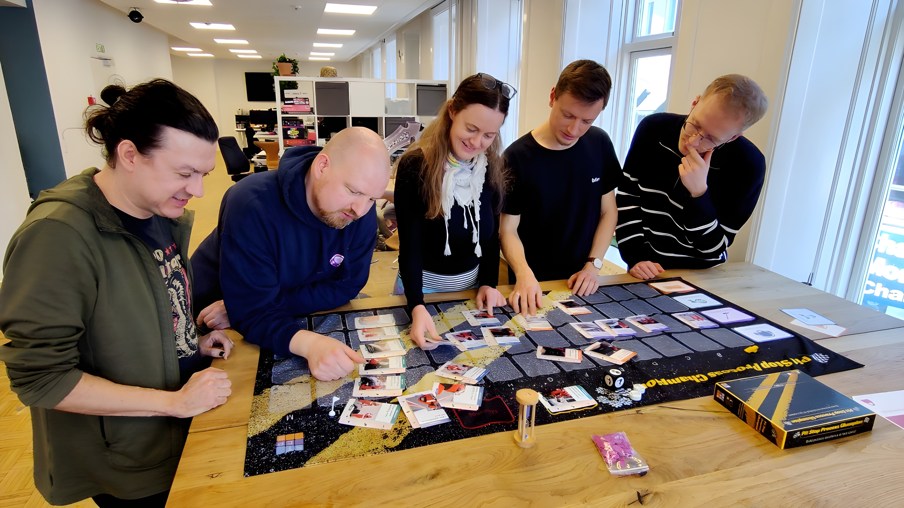
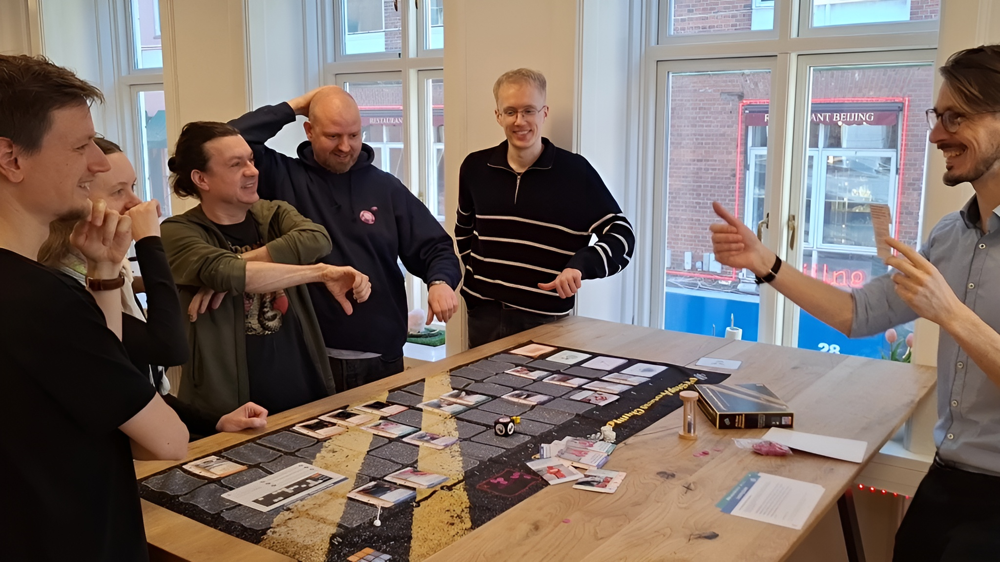
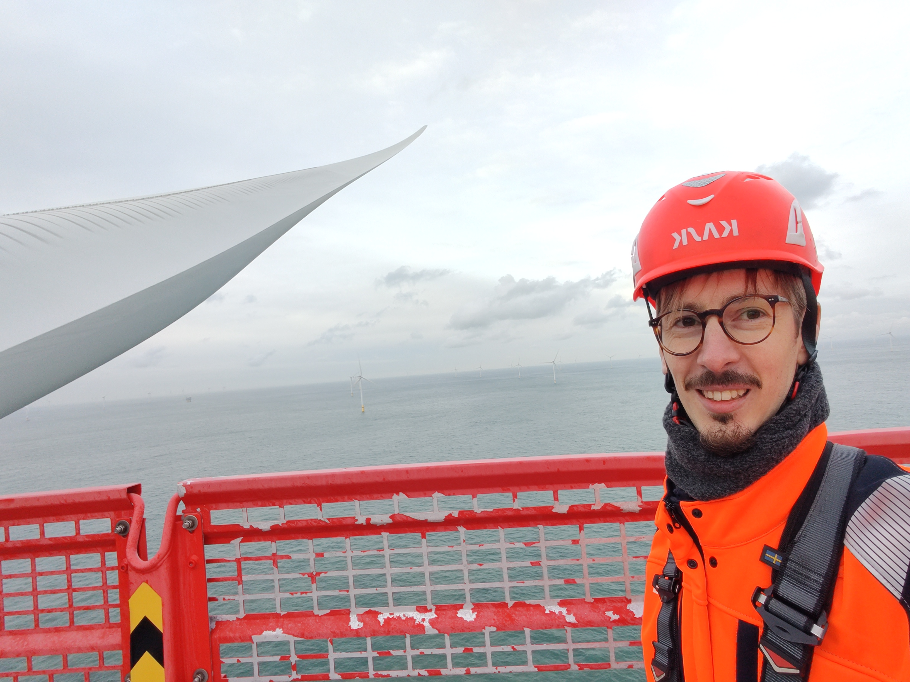

STEPS is a structured training system that surfaces how differently your people interpret the same procedure — and builds the shared understanding to fix it.
Where execution erodes
Team members read the same SOP and reach different conclusions about who does what — and when.
High-stakes, low-frequency scenarios are the ones that cause failures. They're also the ones teams are least prepared for.
Procedure changes reach people at different times, through different channels, with different levels of attention.
Over time, what people actually do gradually departs from what the procedure says they should do.
What is STEPS
STEPS is a custom-built training tool — designed around your actual procedures, your roles, and your operational context. We build it with you. Your facilitators can run it, indefinitely.
It is not a lecture. It is not e-learning. It is a facilitated scenario experience that creates shared understanding across roles — the kind that documentation alone cannot produce.
Each session generates data. A dashboard highlights recurring knowledge gaps and alignment trends — giving you evidence for targeted reinforcement, audit documentation, and SOP refinement.
Who does what, and when, becomes explicit — not assumed.
Teams see how their decisions affect adjacent roles in real time.
High-stakes, low-frequency situations are rehearsed before they happen — not after.
Interpretation differences that aren't in the official procedure get captured and acted on.
Dashboard output gives you documented evidence of alignment work done.




How It Works
Every STEPS system is tailored to your procedures, your roles, and your risk profile — in collaboration with your subject matter experts.
We work alongside your subject matter experts to map your SOPs, surface local anecdotes and antipatterns, and pinpoint exactly where interpretation risk is highest.
A bespoke STEPS system is designed around your exact procedures and verified with your team before a single session runs. Your organisation owns it permanently. Your facilitators run it. Every scenario reflects your real operational context — not generic training material.
We personally prepare your internal facilitators, support large-scale rollout events, and stay with you through deployment. Dashboard monitoring ensures gaps are tracked and every reinforcement session is precisely targeted.
Proven in the Field
Offshore technicians and vessel crew trained
Countries across a single coordinated rollout
Years in continuous use for induction and reinforcement
Consistently preferred over lecture-based formats by participants
Who We Are
We are two strategic design consultants who built and validated STEPS from the inside — embedded in one of the world's most complex offshore operations. We know what procedural misalignment costs because we've seen it at scale.
We don't sell off-the-shelf training. We design systems that fit your operational reality and leave your organisation with lasting internal capability.

Viktor Beregszaszi
Gamification & Safety Training Strategist
Designs gamified learning systems for safety-critical industries. 1500+ employees trained. Certified change practitioner and international speaker on gamification at scale.
LinkedInTobias Juul Brøgger-Jensen
UX & Service Design Strategist
8+ years designing complex operational systems for large organisations. Specialises in translating procedures and processes into clear, human-centred experiences that stick.
LinkedInWho This Is For
STEPS works best where the gap between what the procedure says and what people actually do carries real consequences — whether that's a safety incident, a compliance failure, a production error, or a patient risk.
We map your highest-risk procedures together and show you exactly where STEPS would make a difference. A 45-minute session. No commitment. Free of charge.
Book Your Execution Risk ReviewTogether, we'll: